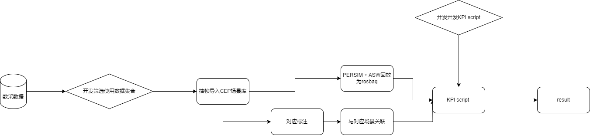

Data replay pipeline
Overview
|
Solution |
Persim + Data |
DOL + INCIDENT/Mileage Rosbag |
Persim + new installation GT car data |
|
vehicle |
Mining car |
Functional car |
Functional car |
|
Cross -version support |
Universal between versions |
Related interfaces involve unavailable after the architecture is upgraded |
Universal between versions |
|
Label |
There is a corresponding real value radar for labeling |
The real value radar covers is low, and the availability rate is low |
There is a corresponding real value radar for labeling |
|
Data, Vehicle accumulation |
existing |
existing |
Re -construction, high Effort |
|
Complex functional verification (dependent FCT) |
Need to be re -developed |
Reuse BAG signal |
Need to be re -developed |
Solution breakdown
Persim + Data
